Fähigkeiten
Softwareentwicklung
Bei der Softwareentwicklung geht es für mich darum großartige Produkte für Kunden zu bauen.
Deshalb ist es existentiell wichtig regelmäßige Kontakte mit Stakeholder zu halten.
Ich glaube das Agil Methoden wie Scrum und Kanban helfen, um Anforderungen zu priorisieren und schnell ein MVP (Minimum Viable Product) für den Kunden zu entwickeln.
Trotzdem kann man mit diese Methoden Roadmaps und Visionen für Produkten entwickeln und umsetzen.
Durch Clean Code & Clean Architecture kann man Lösungen bauen, wovon Kunden mehrere Jahren zufrieden sind.
Ich habe Erfahrung folgende Architekturarten zu planen, entwickeln und aufrechtzuhalten: monolithisch, SOA (Service Orientated Architecture) & microservice Architekturen.
Die genutzte Programmiersprache sollte die Anforderungen von den Stakeholder erfüllen und deswegen nutze ich einige Backend, Frontend und App Programmiersprachen:
Backend Entwicklung
Ich habe umfangreiche Kenntnisse von Java mit besonderem Schwerpunkt auf die Entwicklung von RESTful Web Services und Microservices mit den Spring Framework. (Spring Boot, Data etc.).
Viele meiner Applikationen sind mit Maven gebaut und nutzen Git für Versionsverwaltung mit GitHub Actions als Werkzeug für Continuous Integration pipelines.
Ich habe FishEye für Codereviews und Jenkins für Continuous Integration pipelines genutzt. Ich habe auch Python genutzt um Microservices zu entwickeln.
Frontend & Webentwicklung
Ich habe umfangreiche Kenntnisse über den Aufbau von Websites für geschäftlich als auch gemeinnützige Zwecke.
Meine Lieblingsframeworks dafür sind React and Angular. Ich habe auch den LAMP Stack (Apache/MySQL/PHP) genutzt.
Ich habe auch Erfahrung mit CSS, JavaScript und NGINX (als Webserver und Reverse Proxy Server).
App Entwicklung
Ich habe umfangreiche Kenntnisse in der Entwicklung von Mobilen Apps mit einer einheitlichen Codebasis durch Cordova oder React Native auf Android und iOS.
Cloud Infrastructure & Project Management
Ich habe Applikationen entwickelt die entweder auf AWS und/oder Azure Clouds laufen.
Als IDEs habe ich Visual Studio Code, Intellij IDEA und Eclipse genutzt.
Ich habe BPMN und UML als Modellierungswerkzeuge genutzt. Ich habe umfangreiche Kenntnisse von JIRA, YouTrack, Asana, Trello und Mantis für operatives Projektmanagement.
Weiterbildung
Ich finde es sehr wichtig meine Kenntnisse und Fähigkeiten kontinuerlich zu erweitern. Deshalb besuche ich gerne Seminare, oder nehme an Online-Kursen teil.
Hier sind einige meine jüngsten Weiterbildungen. Weitere Bescheinigungen von Seminaren, Trainings und Konferenzen an denen ich teilgenommen habe kann ich nach Anfrage weiterreichen.
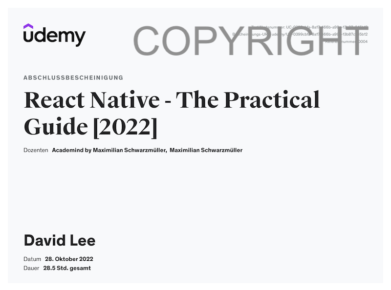
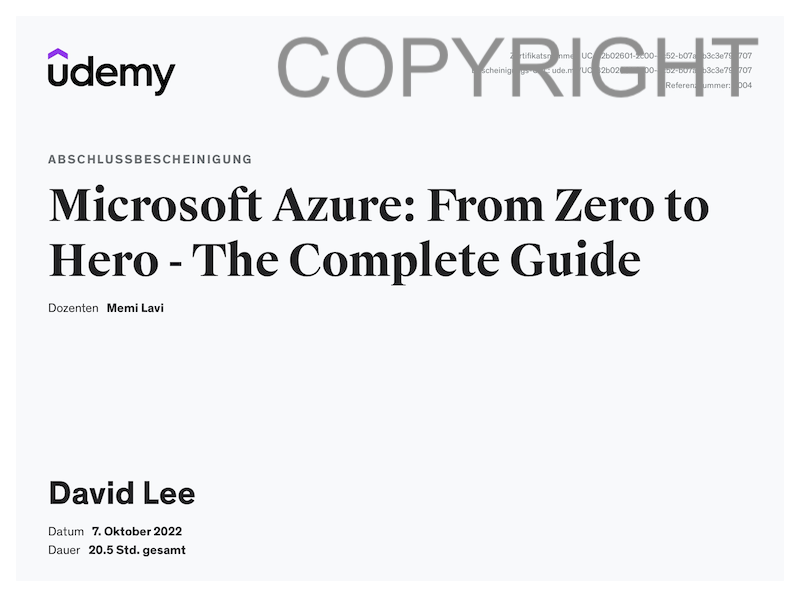
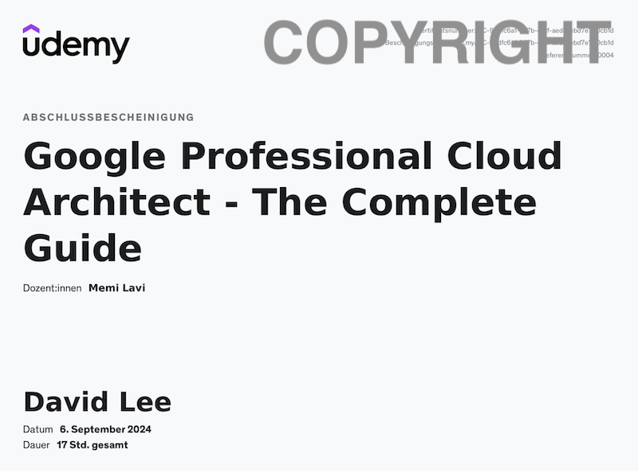
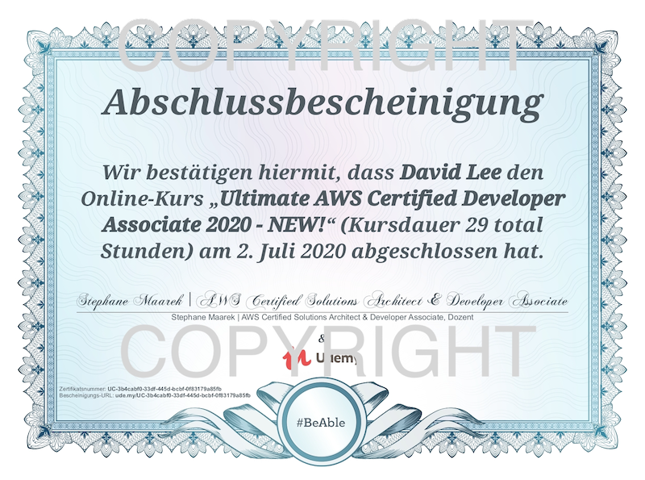
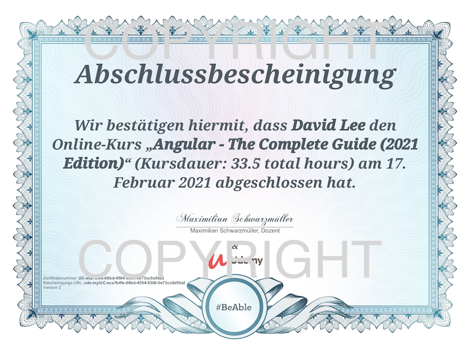
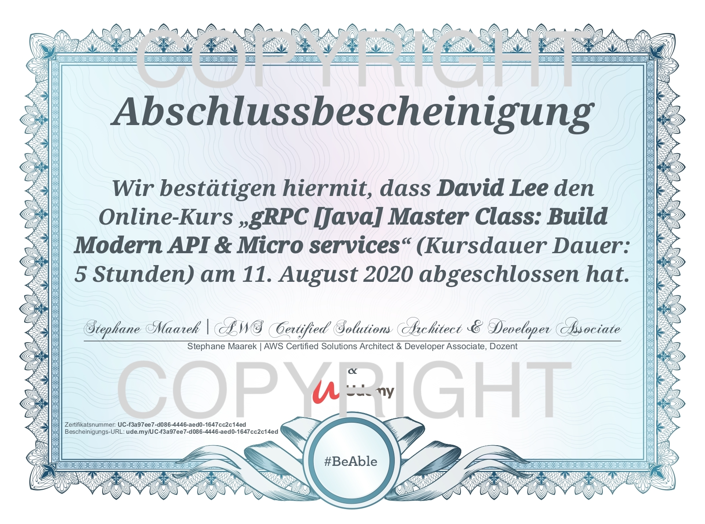
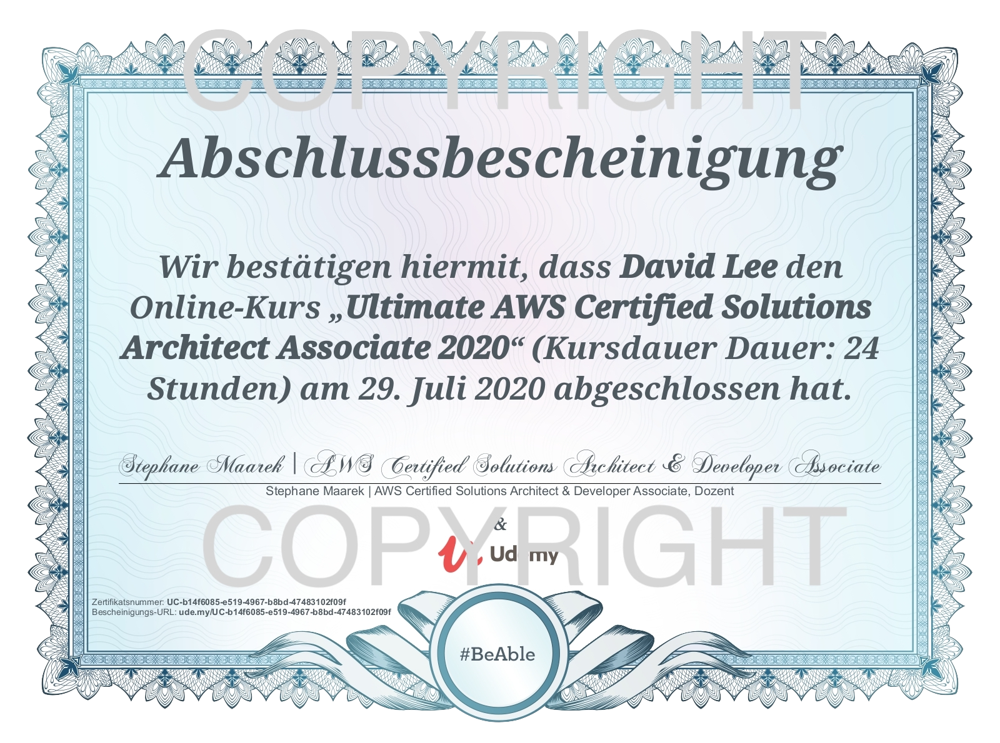
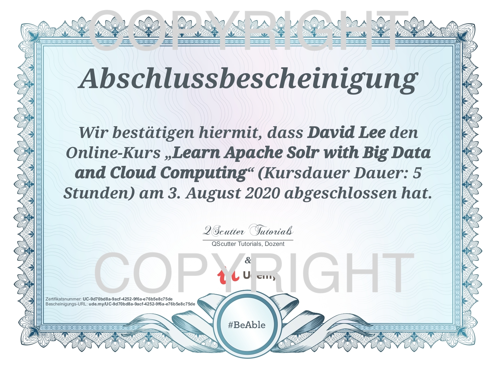
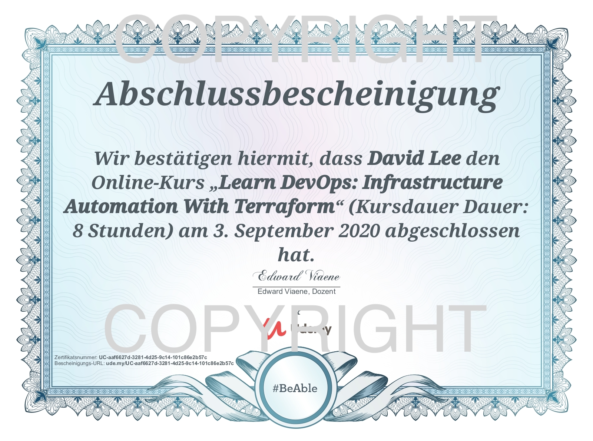
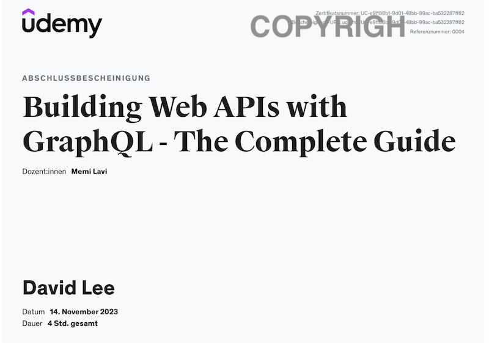
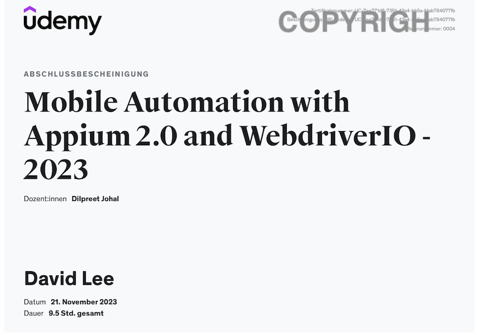
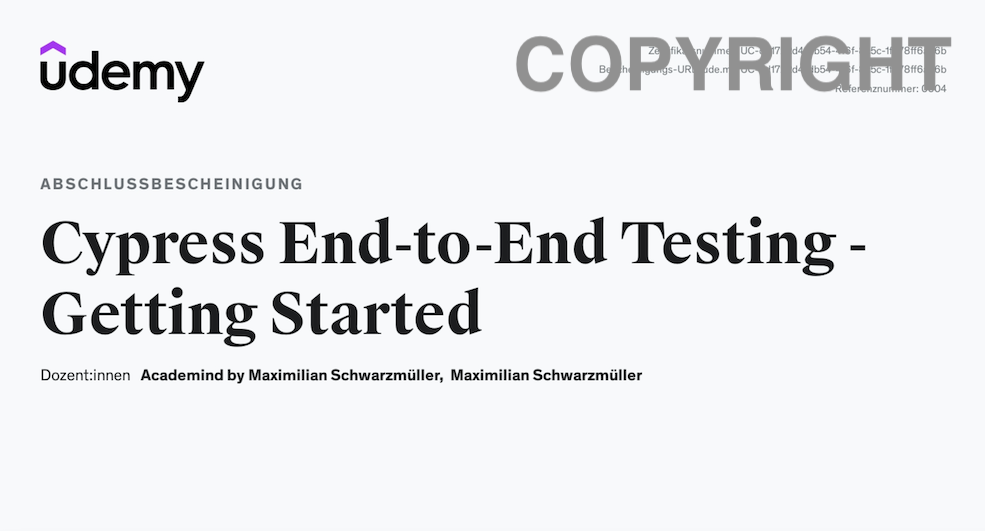
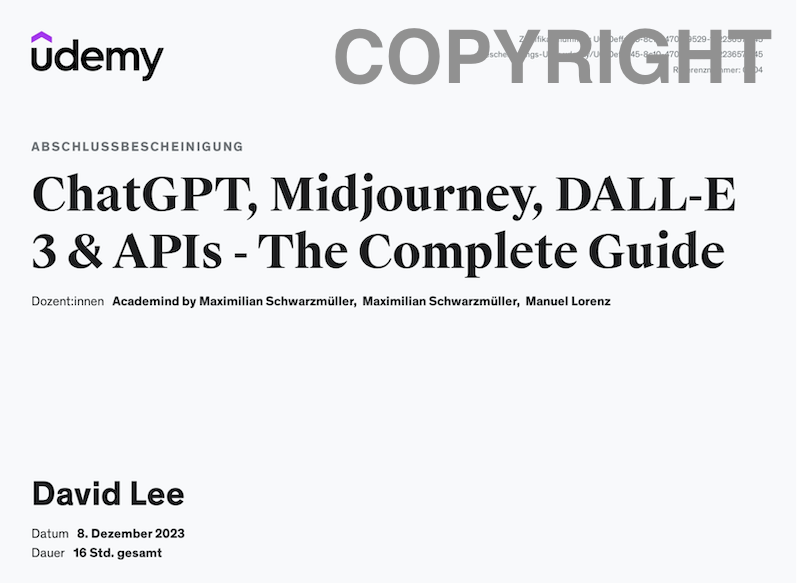